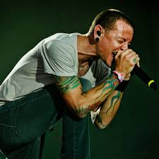

Olaaa, en esta pagina encontraras Informacion,Imagenes,videos,etc,sobre Linkin park(mi banda fav)
La historia de LINKIN PARK
Linkin Park es una banda estadounidense de rock procedente de Los Angeles, California, Estados Unidos. Formada en 1996, el grupo estuvo inicialmente integrado por Mike Shinoda, Dave Farrell, Joe Hahn, Brad Delson, Rob Bourdon y Mark Wakefield, este último como voz principal. La banda inició en ese mismo año sus primeros trabajos musicales de manera independiente y posterior a esto grabaron su primer material llamado Xero; sin embargo no tuvieron gran éxito en la búsqueda de un sello discográfico ya que ninguno mostró interés en su trabajo, lo que ocasionó la renuncia de Mark Wakefield. Poco después, Chester Bennington se incorporó a la banda como vocalista; el grupo realizó su primera presentación en un club de Los Ángeles y siendo respaldados por Jeff Blue, en aquel entonces vicepresidente de Warner Bros. Records, lograron firmar con el sello en 1999. El nombre del grupo es un juego de palabras haciendo referencia al Lincoln Park en Santa Mónica.
Los primeros años de la banda se remontan a un pequeño estudio del vocalista Mike Shinoda donde él, junto a un amigo y compañero de colegio Agoura High School, Brad Delson grabaron el primer material de la banda en 1995. Los dos estaban en el mismo instituto, donde conocieron a Rob Bourdon, actual baterista de la banda. Más adelante, cuando tomaron el tema de la banda más en serio, Shinoda contactó con Joe Hahn cuando estudiaba en el Art Center College de Pasadena. Por su parte, Delson compartió apartamento con el bajista David Farrell, quien decidió dejar el grupo, porque estaba comprometido con su otra formación. Farrell regresó un año más tarde. En esa época se unió a la banda Mark Wakefield, en 1996.
Ya en 1997 había seis integrantes en el grupo y decidieron llamarse SuperXero que posteriormente se veria resumida unicamente a Xero. Grabaron en la alcoba usada como estudio de Shinoda varias canciones con el fin de conseguir un contrato un sello discográfico. Aunque las compilaciones del Xero Sampler Tape se hicieron con pocos recursos, no pudo la banda conseguir un contrato y el proyecto no prosperó. La desilusión era tan grande dentro de la banda que por la misma razón Mark Wakefield decidió abandonar el grupo. Farrell, igual decidió abandonar el grupo por un tiempo, ya que su proyecto anteriormente dicho, la banda The Snax, tenía que hacer algunas giras, por lo que él les tenía que acompañar. Mientras eso se integra a la banda Kyle Christene, como bajista temporal.
Wakefield era vocalista de Xero, por lo que su salida provocó que el grupo consiguiera un nuevo cantante. Shinoda puso un anuncio en un periódico con el fin de contratar a un nuevo vocalista. Chester Bennington se interesó en aquel anuncio. Bennington es del estado de Arizona, estaba en el grupo Grey Daze y además empezó a grabar discos con el grupo mencionado anteriormente desde los 16 años. Recibió los demos del grupo, unos con las canciones interpretadas por otro vocalista y otro con las versiones instrumentales. Una vez terminado el trabajo de Bennington de grabar su voz en los demos instrumentales, los llamó avisando que estaba listo. Los de la banda le pidieron que una grabación que Bennington hizo la pusiera al teléfono. La banda quedó impresionada por su voz, por lo que decidieron convocarlo inmediatamente.

Tras la integración de Bennington en 1999, la banda se llamó Hybrid Theory. Desde entonces la banda se preocupó en hacer un nuevo material trabajando en un sello independiente. Pero al registrar el nombre del grupo, tuvieron un problema, ya que existía un grupo con el nombre Hybrid, por lo que la banda tuvo que cambiar su nombre otra vez. Después de tantos nombres, Bennington propuso que la banda se llamara Lincoln Park, donde pasaba con su auto al volver de los estudios, como un homenaje al Lincoln Park de Santa Monica. Desde entonces la banda se llamó Lincoln Park, pero hubo otro problema, ya que el dominio “lincolnpark.com” costaba más de lo que la banda podía permitir, cambiaron la palabra Lincoln por Linkin y desde ese momento se llamó la banda “Linkin Park” hasta el día de hoy.
Anteriormente estaban trabajando en un nuevo material lo que resultó ser un EP, llamado Hybrid Theory EP. Este EP contenía 6 canciones: Carousel, Technique, Step Up, And One, High Voltage y Part of Me. Fue lanzado el año 1999.
Linkin Park seguía por la lucha de la búsqueda de un contrato de sello discográfico, Hubo muchos rechazos por parte de grandes sellos discográficos. Jeef Blue los ayudó en esto. Éste en esa época se convirtió en el vicepresidente de Warner Bros. Records, desde entonces Linkin Park firmó un contrato con esta discográfica. Ya a la mano de Warner Bros., la banda trabajó para un nuevo material de estudio que se un año más tarde se lanzó. En la realización de este trabajo se integra Scott Koziol, bajista temporal de la banda. Éste trabajo sería uno de los mejores del grupo: Hybrid Theory.